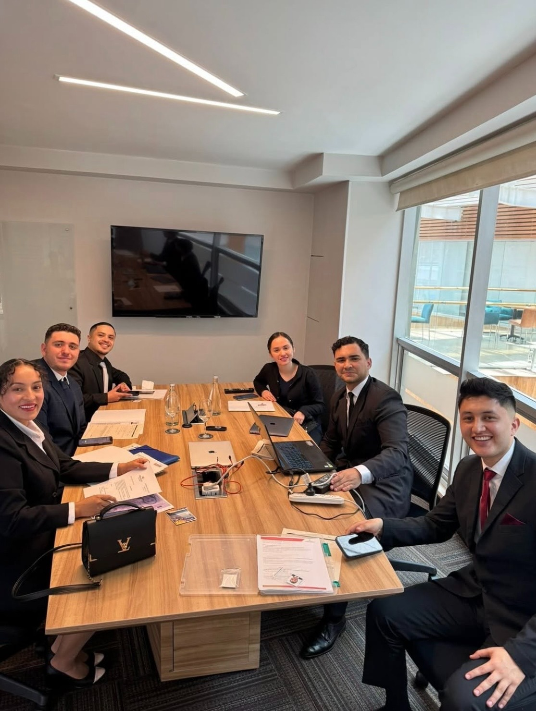

Experienced Team
Our recruiters combine years of industry insight from luxury hospitality and international placement.
Before founding Luxury Hospitality Recruitment, Matías spent years inside the industry he now recruits for. He served as a personal butler to members of the Royal Family in the United Arab Emirates, worked at the Burj Al Arab, the world's only seven-star hotel, and at the Burj Khalifa, and managed luxury restaurants across Dubai. The standards he places candidates against today are the same standards he was trained to deliver.
Luxury Hospitality Recruitment bridges the gap between exceptional Latin American talent and world-class hospitality careers. Founded by Matías Castillo after years working with the world's leading hotels and restaurants in Dubai and the Middle East, our mission is to raise the standard in international recruitment and create transformative opportunities for individuals and employers alike.
We envision a future where borders are no barrier to talent, and ambition meets opportunity on a global stage. With a network that spans continents and clients ranging from private estates to iconic hotels, our commitment is to connect driven professionals to high-impact roles and help global brands discover extraordinary people.

Our recruiters combine years of industry insight from luxury hospitality and international placement.
We work closely with talent and employers to ensure the perfect match for every role.
A network spanning Latin America, Europe, and the Middle East empowers broader opportunity.
To become the global benchmark for hospitality recruitment, connecting passion with purpose and helping organizations build outstanding teams worldwide.